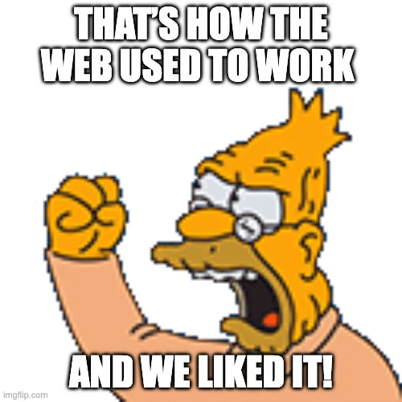
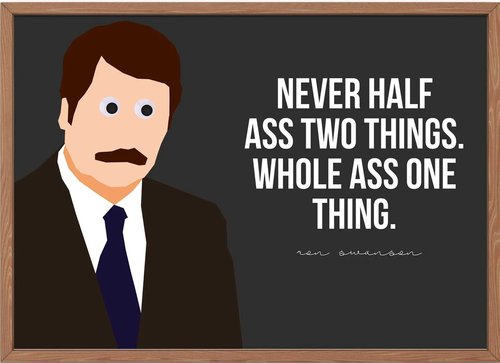
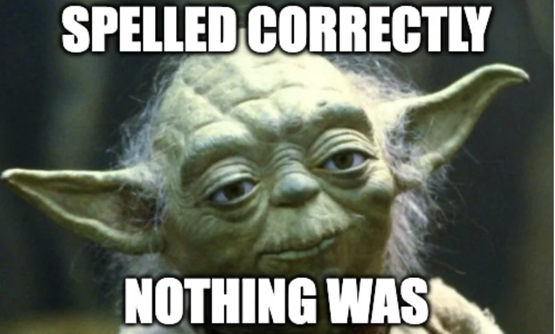
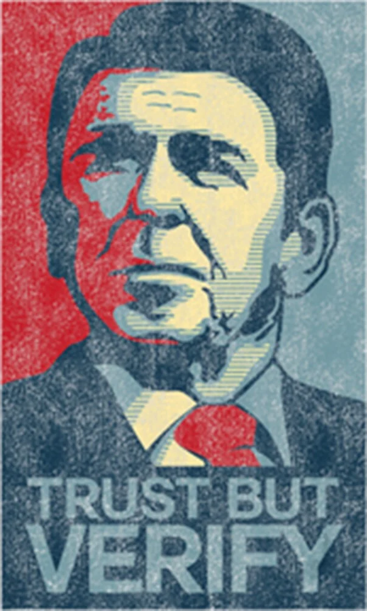
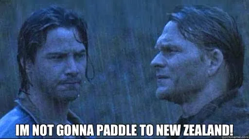
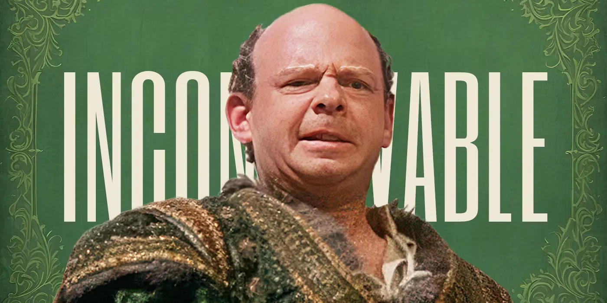

Getting more from AI by doing less with AI.
This started as a chore, not an architecture.
That’s the whole origin story. And like any proper engineering effort, I started with requirements — what I wanted, and what I wasn’t willing to sign up for. The second list is the one that did the design work.
Cheap, boring, kid-proof — with exactly enough AI in it to be a period piece. The folder part will still work in 2038. Ask me about the AI part then.
This is the entire product.
August 19, 2026
I got a new bike for my birthday! It’s blue and it has 21 gears. I rode it to the park with Dad.
One (optional) human click in the middle, to approve it. The model’s entire job is turning the left box into the right box’s words.
The cloud promised I would never think about a server again. Then it handed me a datacenter, with 487 new ways to be wrong. It took an entire new specialization — DevOps, or site reliability engineering — to tame it. A whole discipline, separate from the programming I had just spent a decade learning.
So what is left?
The whole website is a folder. Git keeps every version, a pull request proposes a change, GitHub Pages serves it for free, and GitHub Actions ships it in about ninety seconds. I do not configure, patch, or get paged by any of it.

Fewer knobs, fewer ways to be catastrophically wrong — the same bet I am making with the AI.
The less you do, the more you do.
One box understands the message. The other four just move it around — reliably, cheaply, forever.

I don’t wear a watch anymore. My phone tells the time.
The LLM is the smartphone of your stack. It can do almost anything — a little. Which is exactly why you’re tempted to let it absorb every job.
Does one thing. Glanceable, cheap, never asks you to log in, never hallucinates the time.
Also tells the time — while being a slot machine, a camera, and forty notifications.
Don’t make a load-bearing clock out of a slot machine. Use a watch for the watch jobs.
Do less. Not nothing. You gotta do something.
Read a human sentence,
written by a 7-year-old,
and work out what it means.

I have been paid to write code in three different decades, and I would not know how to begin. The model does it on the first try, for a fraction of a cent.
That isn’t a risk I’m managing — it’s the reason this pipeline exists at all.
When life gives you lemons, say ‘forget the lemons’ and bail.

The gate is not there because the AI is new.
It is there because we have always reviewed each other’s work.
Code review. Staging. terraform plan before apply.
We built “show me the diff before it is real” because the human
making changes was never reliable either.
Here the gate is a path filter in CI — the
agent can only touch content/ — and a pull request a human
sees first. We chose it not because it is hard, but because it is easy.
You can’t fight the wave. You’ve got to ride it.
The agent writes markdown, never HTML. Its output runs through Pydantic before it touches a file — valid slug, real date, a section that exists.

Bodhi paddles out into a fifty-year storm, and a cop on the beach says “we’ll wait for him to come back in.” There is no coming back in. It was never one of the options.
Neither is HTML. I am not trusting the model to choose well — I removed the other choices. Same trade I made with GitHub Pages, pointed at the model instead of at me: fewer options, fewer ways to be wrong.
A confession from somewhere in the build.
I was about to commit every scrap in this folder — a megabyte and change of unused source images — into a public repo, forever, because sorting them felt like work. The agent committed the six files the page actually serves, and left the rest alone.
For about a second, that genuinely felt like intelligence.

You keep using that word.
I do not think it means what you think it means.
It was not intelligence. It was a rule — do not put unreferenced binaries in permanent history — applied at midnight exactly the way it would be applied at noon, by something that does not get tired and does not get lazy. That is not a new kind of mind. That is a computer. The one job is still the one job. But the part that saved me was the boring part.
And if you think these jokes are bad, you should see the ones I threw away. Doing less applies to material, too.
This is what it looks like.
Find the seam where AI is genuinely the right tool. Give it that one job. Let honest code carry the rest.
The folder outlives the model.
A talk by Michael Knoll · in a personal capacity.
Built With Charm · Baltimore · 2026.
This page is hand-written HTML. The AI didn’t do it. 🦀